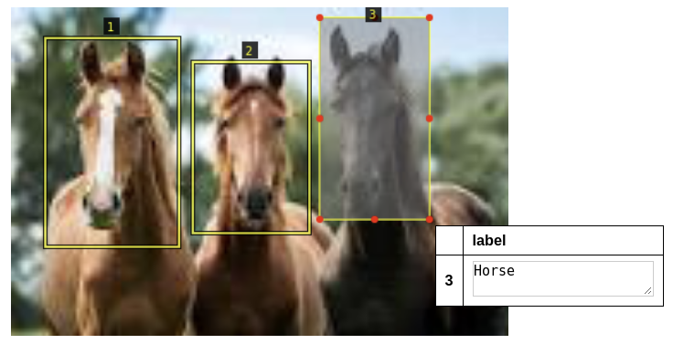

Object Detection
Introduction
Using the Indico platform, you can train models to be able to detect whether an element is present in an image and its location (a process referred to as ‘Object Detection’).
For now, you can’t label object detection models within the Indico platfrom. Instead, you should create a CSV dataset including a column of paths/urls to your images and a column for the bounding box labels for each image.
Below is an example of what we mean when we talk about annotating an image with bounding box labels. You can only use box annotations (i.e. you can’t currently annotate circles, etc.).
There are three horses in the image that we want to capture and the format of the bounding box values should look like this:
[
{"top": 231, "bottom": 440, "left": 182, "right": 435, "label": "Horse"},
{"top": 265, "bottom": 314, "left": 227, "right": 400, "label": "Horse"},
{"top": 225, "bottom": 386, "left": 415, "right": 618, "label": "Horse"}
]
Above, the ‘top’, ‘bottom’, ‘left’, ‘right’ keys represent the bounding box for each labeled item in your image.
If you don’t already have a object detection labeling tool, you can try this open source tool from Oxford University: http://www.robots.ox.ac.uk/~vgg/software/via/.
Uploading your Dataset and Training your Model
With your object detection labels in a CSV alongside either the URL to each image or the local path to the image on your computer, you can create your dataset and workflow via the API:
from indico.queries import CreateDataset
dataset = client.call(
CreateDataset(
name="my dataset",
files="./path/to/my.csv",
from_local_images=True,
wait=True,
image_filename_col="csv_column_name_of_urls_or_paths"
)
)
For the “files” parameter provide the path to your CSV and for the “image_filename_col” parameter provide the column name containing the paths/urls of your images.
Next, create a workflow under which your model will live:
new_workflow = client.call(CreateWorkflow(name="Name of your workflow", dataset_id=dataset.id))
To train your model, you can use the parameters you see below and the dataset object we created above:
model_training_options = {
"max_iter": 5000,
"lr": 2.5e-4,
"batch_size": 2,
"filter_empty": False,
"test_size": 0.0,
"use_small_model": False,
}
after_component_id = new_workflow.component_by_type("INPUT_IMAGE").id
create_model_request = AddModelGroupComponent(
name=workflow_name,
dataset_id=dataset.id,
after_component_id=after_component_id,
source_column_id=dataset.datacolumn_by_name("urls").id,
labelset_column_id=dataset.labelset_by_name("label").id,
workflow_id=new_workflow.id,
model_training_options = model_training_options
)
client.call(create_model_request)
In the code above, the “labelset_id” should be the CSV column name containing your bounding box labels (in the example above, we named the column “label”). The column “urls” will be automatically created by the platform and represents the location of your images after they’ve been uploaded by Indico.
Predict with your Object Detection Model
To get predictions from your model, you must first upload the images you want to predict on and then pass them to the model, for example:
import json
from indico.queries import (
ModelGroupPredict,
JobStatus,
UploadDocument,
URL_PREFIX,
)
response = client.call(UploadDocument(files=['./myfile.png', 'myfile2.png']))
urls = [URL_PREFIX + json.loads(r["filemeta"])["path"] for r in response]
job = client.call(
ModelGroupPredict(
model_id=425, # selected model ID
data=urls,
load=False,
)
)
prediction = client.call(JobStatus(job.id, wait=True)).result
The prediction results will be a list of lists and each list will look like:
[
{
"bottom": 256,
"left": 439,
"right": 480,
"top": 221,
"confidence": 0.5751668214797974,
"image": {"url": "indico-file:///storage/uploads/2/ce5364ae.png"},
"label": "Horse"
}
]
The data includes the bounding box location of the detected object, its predicted label, and the confidence with which the prediction was made.